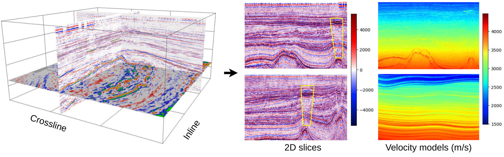
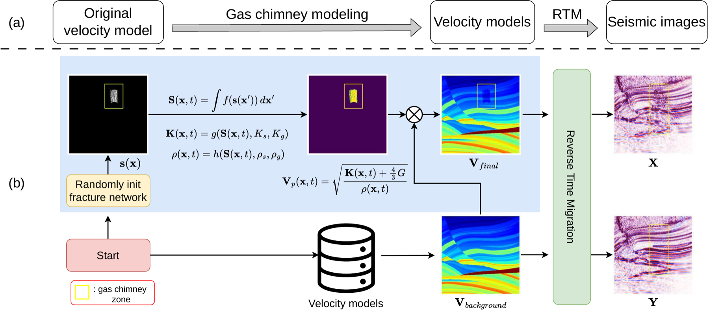
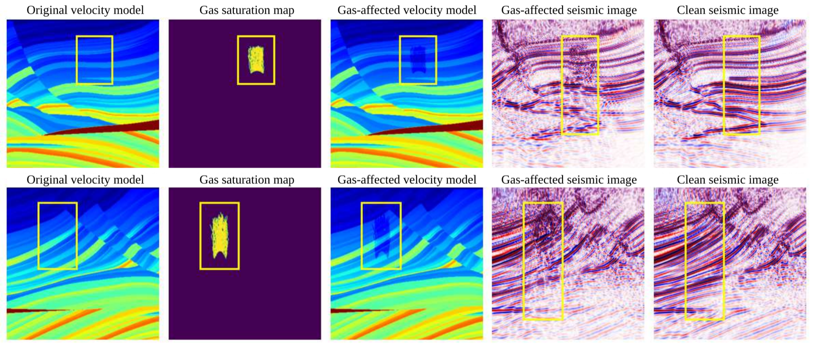

Seismic images reconstruct subsurface reflectivity from field recordings, guiding exploration and reservoir monitoring. Gas chimneys are vertical anomalies caused by subsurface fluid migration. Understanding these phenomena is crucial for assessing hydrocarbon potential and avoiding drilling hazards. However, accurate detection is challenging due to strong seismic attenuation and scattering. Traditional physics-based methods are computationally expensive and sensitive to model errors, while deep learning offers efficient alternatives, yet lacks labeled datasets. In this work, we introduce SIGMA, a new physics-based dataset for gas chimney understanding in seismic images, featuring pixel-level gas-chimney masks for detection and paired degraded/ground-truth images for enhancement.
SIGMA is generated with a physics-grounded framework: from real-world velocity models, we simulate gas-chimney effects, build gas-affected velocity fields, and synthesize seismic images with reverse time migration. This pipeline provides paired clean/degraded seismic images and gas-chimney supervision for benchmark tasks.

Seismic Image Pairs
400
Velocity Models
20
Total Coverage
1,600+ km²

@misc{truong2026sigma,
title={SIGMA: A Physics-Based Benchmark for Gas Chimney Understanding in Seismic Images},
author={Bao Truong and Quang Nguyen and Baoru Huang and Jinpei Han and Van Nguyen and Ngan Le and Minh-Tan Pham and Doan Huy Hien and Anh Nguyen},
year={2026},
url={https://arxiv.org/abs/2603.23439},
}